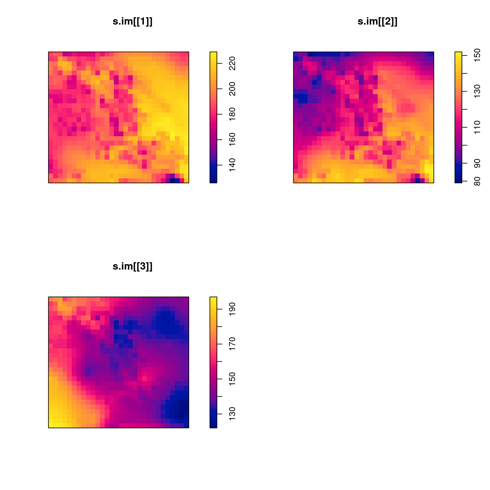

3 Unidad I: Introducción al modelado de procesos de puntos
3.1 Introducción
Cuando analizamos datos con alguna metodología de regresión siempre tenemos claro cuál es la variable de respuesta. Por ejemplo, en un análisis de temperaturas como función de la elevación sobre el nivel del mar y la latitud, el modelo ajustado arrojará valores en las unidades \(°\mathrm{C}\), o las que hayamos utilizado. Aunque la modelación correlativa de nichos esté en gran medida basada en la modelación estadística, ha prevalecido una desconexión sustancial entre lo que se modela y lo que los modelos estadísticos arrojan. La herramienta estadística de regresión que resuelve en buena medida esta desconexión son los Modelos de Procesos de Puntos (MPPs). En MPPs, la variable analizada es la intensidad de puntos, por lo que un MPP predice intensidad.
Los datos de sólo presencia de especies pueden ser concebidos de manera más general como un proceso de puntos (la colección de coordenadas a modelar) sobre una rejilla de unidades espaciales de tamaño fijo. Con esto en mente, la intesidad se define como el número promedio de puntos por unidad espacial. Existe una variedad de MPPs, pero el que estudiaremos aquí son los MPPs Poisson. En estos, la variable intensidad es modelada como una función log-lineal de la distribución Poisson (para conteos), de un conjunto de covariables ambientales. Por lo tanto, los MPPs Poisson son muy similares a los modelos lineales generalizados.
Estos métodos tienen ya una larga trayectoria en estadística espacial y geoestadística, para el análisis de variables aleatorias definidas en el espacio. Muchos de estos métodos existen incluso antes que algunos métodos utilizados rutinariamente para la generación de modelos de nicho ecológico o áreas de distribución. De hecho, un análisis matemático de 2013, encontró que Maxent es en esencia un MPP Poisson.
Para aprender a analizar conjuntos de puntos de ocurrencia utilizaremos el programa R y el paquete spatstat, principalmente. En esta unidad introductoria, aprenderemos a formatear los datos de ocurrencia y las variables ambientales para que puedan ser utilizadas por spatstat. Posteriormente veremos cómo se hace un análisis exploratorio para identificar las variables que potencialmente explican los patrones de intensidad de puntos de nuestra base de datos. Finalmente, veremos cómo se ajusta, selecciona y diagnostica estadísticamente un MPP Poisson.
Cabe mencionar que aquí nos enfocaremos en el aspecto técnico-metodológico, aunque los conceptos como área de accesibilidad, modelo de nicho vs. modelo de distribución siguen aplicandose como en cualquier otra herramienta para el análisis de nichos ecológicos y distribuciones geográficas.
3.2 Formateo de datos
Los formatos básicos en que podemos tener almacenados los datos son los tradicionales .csv, para las ocurrencias, y .tif para los raster. La razón principal por la que se necesita un formato especial para los datos es que spatstat utiliza objetos de clase im o imágenes en lugar de raster, y patrón plano de puntos, objetos de clase ppp para los datos de ocurrencia, que normalmente se manejan como un data.frame.
Hacer la transformación entre formatos es esencial pues spatstat cuenta con muchas funciones para hacer del análisis de datos en estos formatos bastante sencillo.
He escrito una función de R para transformar de raster a im. La transformación de un data.frame a ppp es bastante sencilla y no requiere de una función especial. Entonces, para comenzar necesitamos tener instalados los paquetes raster, rgdal, spatstat y foreach, lo cual se consigue corriendo el siguiente código en la consola de R:
install.packages(c("raster", "rgdal", "spatstat", "foreach"))Después de la instalación, podemos usarlos para cargar una sola capas raster al espacio de trabajo con la función raster, contenida en el paquete del mismo nombre:
library(raster); library(spatstat)
r <- raster("../Datos-ejemplos/Var-1.tif")El único argumento que se pasa a la función raster es la ruta y nombre del archivo. En este caso el archivo está en la carpeta "Datos-ejemplos", y el archivo se llama Var-1.tif. Es importante siempre incluir la extensión del archivo (las 2-4 letras después del punto).
En caso de necesitar cargar más de un archivo al mismo tiempo, podemos utilizar la función stack. Aquí es importante señalar que para que esta función pueda cargar los archivos, estos tienen que estar perfectamente alineados y tener exactamente la misma extensión espacial. El argumento que tenemos que pasar a la función stack es la lista de archivos a leer. Esta podemos generarla automáticamente con la función list.files, cuyos argumentos son la carpeta de búsqueda, extensión de los archivos a listar, y si necesitamos la ruta completa junto con los nombres de los archivos:
arch <- list.files("../Datos-ejemplos/", ".tif", full.names = T)
s <- stack(arch)Una vez cargados las capas, podemos graficarlas para verificar que sean las que necesitamos o tenemos en mente:
plot(s)Figura 3.1: Gráfica de las capas que usaremos para los ejemplos.
La transformación a im la haremos solo con el stack, pues es el escenario más probable al que se encontrarán (trabajo con varias capas). Comenzaremos cargando la función para hacer la transformación, que se llama imFromStack. Para hacerlo utilizaremos la función source, y el argumento que necesita es la ruta y nombre del archivo de texto que contiene la función:
source("../Funciones-spatstat/imFromStack.R")Una vez cargada, podemos utilizarla, pasando como únigo argumento el nombre del objeto en el espacio de trabajo de R que contiene las capas:
s.im <- imFromStack(s)Para verificar el tipo de objeto que resulta, podemos correr la función:
class(s.im)## [1] "list"Como podemos ver es una lista, y cada uno de sus elementos es una imagen. Podemos hacer la gráfica, aunque ahora tenemos que hacerlo una por una:
par(mfrow = c(2, 2))
plot(s.im[[1]])
plot(s.im[[2]])
plot(s.im[[3]])